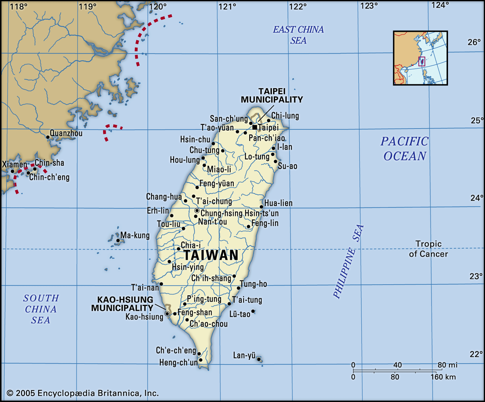
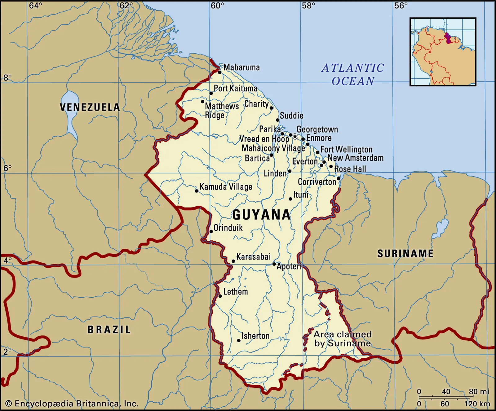

After graduating from Northeastern University with a B.S. in Psychology,
I’ll be volunteering as a lay missionary with the Servidoras, religious
sisters of an institute called
Servants of the Lord and the Virgin of Matará. I met these sisters in the summer of 2022 after mass in Chungli, Taiwan
on a trip visiting my family. As I considered my next steps after
graduation, I felt a strong calling to support women in building their
self-esteem, along with a deep desire for adventure abroad. I remembered
the nuns I met in Taiwan and reached out.
The apostolate of the sisters in Taiwan involves enhancement programs
at the church. During the summer they lead a summer camp for the
children and language classes for all ages. For the month of July 2025
I’ll be in Taiwan teaching English at Sacred Heart of Jesus parish.
The program provides free English and Spanish classes for people of
varying ages and skill levels. This month will be a useful time of
adjustment into living in community life with the sisters in
preparation for the next trip to Guyana.

When I interviewed with the religious Mother she said that the sisters
in Guyana had reached out a day prior if anyone with a Psychology
background had applied to volunteer. The Mother there is a nurse, but
she is seeking someone with a background in mental health, as family
brokenness has contributed to mental health challenges, and high rates
of abuse, suicidality, and hopelessness. I felt that God’s plan
aligned for me at that moment as my education, purpose, and gifts
could be used to serve and support women. For September through
November 2025, I will be providing mental health support and
empowering Guyana’s young women.

I’m personally fundraising a goal amount of $3000 to cover my flights
and basic living costs while I’m abroad. I would love to invite you to
consider making a one time gift to support me in this mission. Any
contribution is helpful and appreciated!
Venmo:
@mariateresat
Zelle: 703-967-8448
Please call or text me to request information for a gift via check.
Thank you so much for your support! Please reach out if you have any
questions.
Please fill out this Google Form to submit prayer intentions and to
keep in touch with a newsletter!